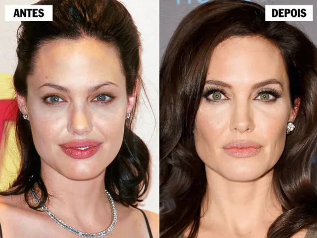

CLÍNICA DE ESTÉTICA DERMO FUNCIONALE

- Página inicial
- Agendar
O que é Bichectomia?
A bichectomia, ou lipoplastia facial, é um procedimento cirúrgico realizado pelo cirurgião dentista e que tem como objetivo reduzir as bochechas, deixando o rosto mais fino e alongado. Nesse procedimento, acontece a retirada total ou parcial das bolas de Bichat, estruturas gordurosas, também chamadas de corpos adiposos bucais, que ficam localizados entre o maxilar e a mandíbula e conferem o formato arredondado ao rosto. Apesar de serem formadas por tecido adiposo, as bolas de Bichat não respondem ao emagrecimento, ou seja, elas continuam presentes mesmo que ocorra a perda de peso. Por questões genéticas, muitas vezes, essa estrutura é maior do que o desejado, causando incômodos estéticos ao paciente, por isso, é possível fazer a remoção.
Para que serve a bichectomia?
Esse procedimento tem como principal função a estética para harmonização orofacial. Seu objetivo é deixar o rosto com a aparência mais magra, fina e alongada. Além dessa finalidade, também é indicada para pacientes que, por terem as bochechas muito grandes, apresentam traumas e dores na mucosa, decorrentes de mordidas constantes.
Para quem é indicado?
Antes de mais nada, é preciso que o paciente passe por uma avaliação profissional para entender se está elegível para o procedimento e quais são as suas expectativas. Também é importante a realização de exames pré-cirúrgicos. A cirurgia é indicada para pessoas que apresentam o formato do rosto muito arredondado, volume pouco definido, bochechas muito grandes ou pouca definição da mandíbula em razão da gordura da papada e pescoço. Mas é claro, desde que o paciente se incomode com essas características. Apesar de ser mais procurado por mulheres, homens com esse biotipo também podem optar pela cirurgia e se beneficiarão com os resultados.
Quais as contraidicações?
É preciso que o profissional avalie as expectativas e o formato de rosto do paciente para verificar se o procedimento é mesmo necessário. Pacientes que já apresentam o rosto fino e magro não devem realizar a cirurgia, com o risco de sofrerem com o envelhecimento precoce. Além do formato de rosto, outros fatores também são contraindicações para a bichectomia, são eles: uso de radioterapia ou quimioterapia; cardiopatias severas; infecções locais ou sistêmicas; deficiências de coagulação; problemas hepáticos e renais graves; gravidez; menores de idade.
Quais resultados esperar?
A bichectomia é uma cirurgia que promove uma melhoria na estética. Alguns pacientes notam mudanças significativas, enquanto em outros casos, a mudança é sútil. Por isso, é fundamental que você converse com seu cirurgião dentista para alinhar suas expectativas. Os resultados esperados da cirurgia são o afinamento da parte inferior do rosto, promovendo a definição das mandíbulas e maçãs.
Qual o profissional que pode realizar?
Tanto o cirurgião-dentista quanto o cirurgião plástico podem realizar a bichectomia. Aqui na clínica nós temos o doutor Marcos e o doutor Minouro que podem realizar esses procedimentos.
Gostou de conhecer sobre a bichectomia e se interessou por ela, então, agende sua consulta com algum de nossos profissionais.